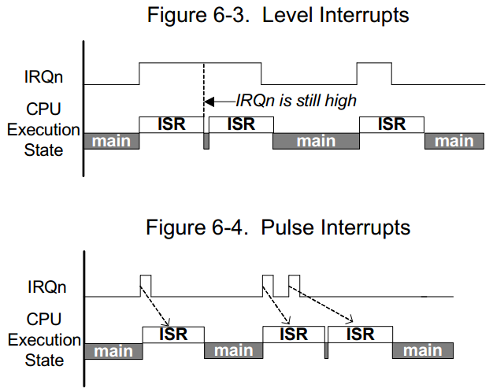
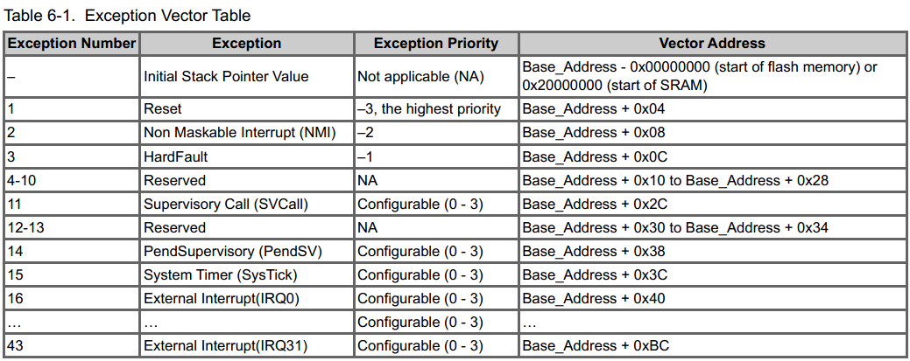
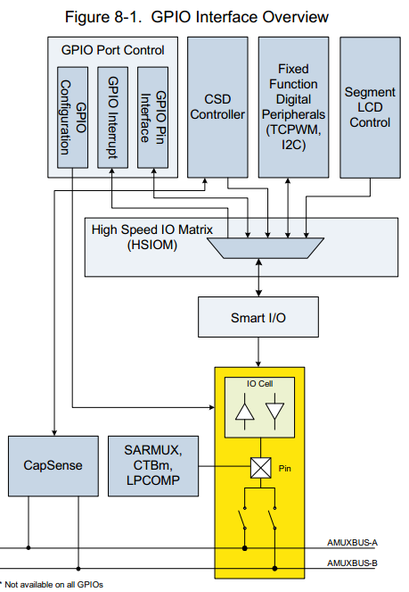
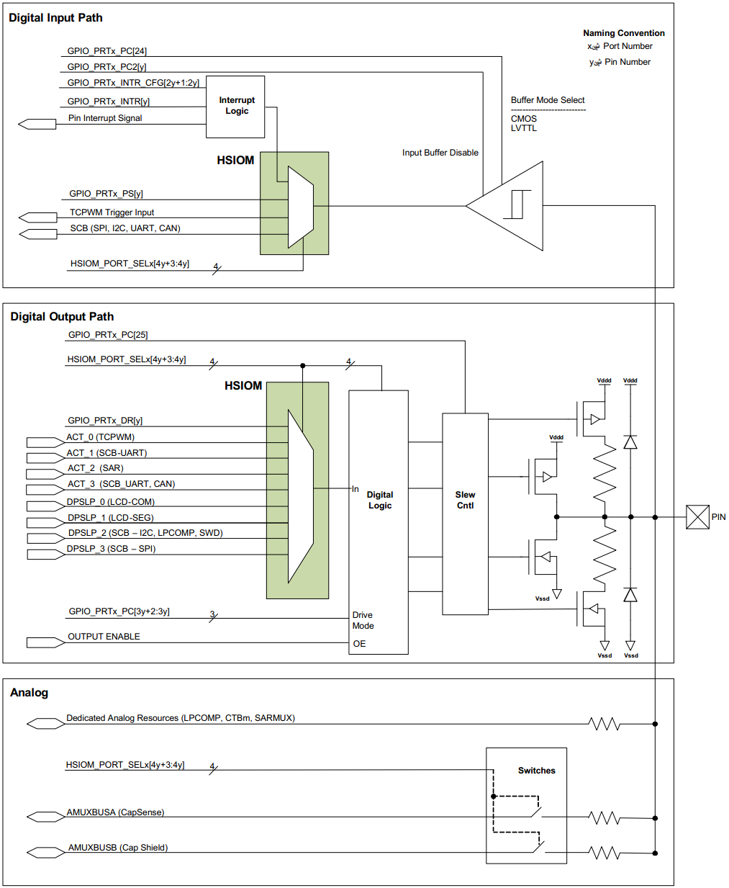
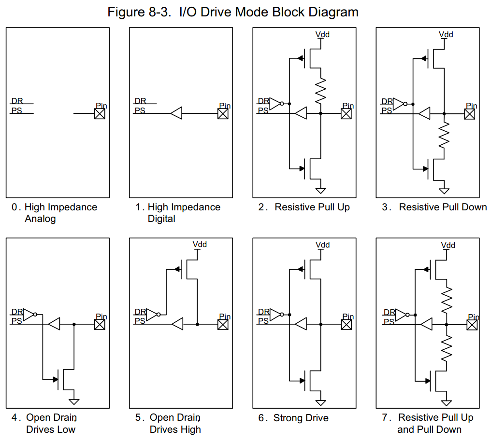
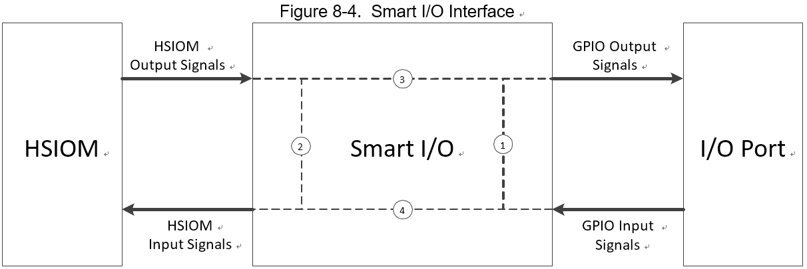

PSoC 4100S Architecure TRM
先从它的Architecure开始学起，参考文档：
Infineon-PSoC_4100S_and_PSoC_4100S_Plus_PSoC_4_Architecture_TRM-AdditionalTechnicalInformation-v12_00-EN.pdf
CPU System
- Cortex m0+ 32bit MCU，高达0.9DMIPS/MHz。
- NVIC、MPU、VTOR
- Address Map
| Range | Name | Use |
|---|---|---|
| 0x00000000 ~ 0x1FFFFFFF | Code | 程序运行区，也可以存放数据，包含放于0起始地址的中断向量表 |
| 0x20000000 ~ 0x3FFFFFFF | SRAM | SRAM区，也可以在此执行程序 |
| 0x40000000 ~ 0x5FFFFFFF | 外设 | 所有的外设寄存器地址 |
| 0x60000000 ~ 0xDFFFFFFF | 未使用 | |
| 0xE0000000 ~ 0xE00FFFFF | PPB | CPU内核中的外设寄存器 |
| 0xE0100000 ~ 0xFFFFFFFF | Device | PSoC4特殊寄存器 |
地址对齐访问：字对齐地址用于字或多字访问，半对齐用于半字访问，字节访问总是对齐的。
不支持CortexM0+处理器上的未对齐访问，任何尝试执行未对齐的内存访问都会导致Hardfault异常。
非对齐访问的定义：当试图从一个不被N偶数整除的地址（即addr % N != 0）开始读取N字节的数据时，就 会发生非对齐内存访问。例如，从地址0x10004读取4个字节的数据是可以的，但从地址 0x10005读取4个字节的数据将是一个不对齐的内存访问。小端格式，little-endian
DMA
DMA控制器仅在PSoC 4100S Plus器件中支持。有如下特性：
- 支持八个通道，每通道可设四个优先级，每通道支持三种模式。
- 支持字节、半字（2B）和字（4B）传输
- 可配置中断，传输完成后可触发中断。
- 传输最大65535数据元素，可以是8bit、16bit或32bit。
三种模式分：
- Mode 0: Single data element per trigger
- Mode 1: All data elements per trigger
- Mode 2: All data elements per trigger and automatically trigger chainned descriptor.
具体请查看TRM手册。
Interrupt
PSoC4支持Interrupts和Exceptions，Interrupt指由外设向CPU产生的事件，如timer、SCB（serial communication block）、GPIO等，Exception是由CPU产生的事件，如内存访问错误、内部timer事件等。中断和异常都会导致当前程序流停止并且 CPU 正在执行异常处理程序或中断服务例程 (ISR)。 PSoC4为中断处理程序/ISR 和异常处理程序提供了一个统一的异常向量表。特性：
支持32个中断
- Nested vectored interrupt controller (NVIC) 与 CPU 内核集成，产生低中断延迟
- 中断向量表可以放置在Flash或 SRAM 中
- 每个中断的可配置优先级从 0 到 3
- 电平触发和脉冲触发中断信号


第一个4字节用于芯片在复位时初始化主堆栈指针（MSP）值。通过修改VTOR，向量表可以位于Flash或SRAM中的任何位置，该寄存器位于0xE000ED08系统控制空间的一部分，占用31:8位，位7:0被保留。所以向量表地址应为256字节对齐！
除非 CPUSS_SYSREQ 寄存器的 DIS_RESET_VECT_REL 位置位，否则读取闪存地址 0x00000000 和 0x00000004 将重定向到 SROM 的前 8 个字节以获取堆栈指针和复位向量。 复位时该位的默认值为 0，确保始终从 SROM 获取复位向量。 要允许从地址 0x00000000 和 0x00000004 读取闪存，应将 DIS_RESET_VECT_REL 位设置为“1”。 堆栈指针向量保存堆栈指针在复位时加载的地址。 复位向量保存引导序列的地址。 完成此映射以在释放器件复位时使用来自 SROM 的堆栈指针和复位向量的默认地址。对于复位，首先执行 SROM 中的引导代码，然后 CPU 跳转到闪存中的地址 0x00000004 以执行闪存中的处理程序。 SRAM 向量表中的复位异常地址从不使用。
此外，当 CPUSS_SYSREQ 寄存器的 SYSCALL_REQ 位置位时，闪存地址 0x00000008 的读取将重定向到 SROM 以获取 NMI 向量地址，而不是从闪存中获取。 重置 CPUSS_SYSREQ 以读取地址 0x00000008 处的闪存。
Supervisor Call (SVCall) Exception & PendSV Exception
主管调用 (SVCall) 是当 CPU 将 SVC 指令作为应用程序代码的一部分执行时引起的始终启用的异常。 应用软件使用 SVC 指令调用底层操作系统并提供服务。
PendSV 是另一个与 SVCall 类似的与主管调用相关的异常，通常是由软件生成的。 PendSV 始终处于启用状态，并且其优先级是可配置的。 通过设置中断控制状态寄存器 CM0P_ICSR 中的 PENDSVSET 位来触发 PendSV 异常。 设置该位后，PendSV 异常进入挂起状态，并等待 CPU 处理。 通过设置中断控制状态寄存器 CM0P_ICSR 中的 PENDSVCLR 位可以清除 PendSV 异常的挂起状态。 通过写入系统处理程序优先级寄存器 3 (CM0P_SHPR3) 的两个位字段 PRI_14[23:22]，可以将 PendSV 异常的优先级配置为 0 和 3 之间的值。
中断优先级
Reset、NMI和HardFault异常固定优先级分别为-3、-2、-1，其他中断可以配置为0~3，较低的数字代表较高的优先级。PSoC4支持中断嵌套，较高优先级的异常会阻碍（中断）当前低优先级的中断处理，如果优先级相同，则不会发生抢占。CPU处理完高优先级的中断后处理低优先级的异常处理。PSoC4的CM0+最多支持四个嵌套异常。
Device Security
PSoC® 4 提供了许多选项来保护用户设计免受未经授权的访问或复制。禁用调试功能并启用闪存保护可提供高级别的安全性。调试电路默认启用，只能在固件中禁用。如果禁用，重新启用它们的唯一方法是擦除整个flash，清除闪存保护，并使用启用调试的新固件重新编程设备。
注意：由于启用最大设备安全性时所有编程、调试和测试接口都被禁用，因此启用了完整设备安全性的 PSoC 4 设备可能不会被退回以进行故障分析。
CPU 以普通用户模式或特权模式运行，以BOOT、OPEN、PROTECTED 和 KILL四种保护模式之一运行。可以通过写入 CPUSS_PROTECTION 寄存器来更改模式。
■ BOOT 模式：设备在BOOT 模式下退出复位。它一直保持在那里，直到其保护状态从管理器闪存复制到保护控制寄存器 (CPUSS_PROTECTION)。在此期间调试端口访问停止。 BOOT 是一种将器件设置为其配置的保护状态所需的暂时模式。在 BOOT 模式期间，CPU 始终以特权模式运行。
■ OPEN 模式：这是出厂默认设置。 CPU 可以在用户模式或特权模式下运行。在用户模式下，可以对闪存进行编程并支持调试器功能。在特权模式下，强制执行访问限制。
■ PROTECTED 模式：用户可以将模式从OPEN 更改为PROTECTED。此模式禁用对用户代码或内存的所有调试访问。在保护模式下，只有少数寄存器可以访问；无法对寄存器进行调试访问以重新编程闪存。该模式可以重新设置为 OPEN，但只有在完全擦除Flash之后。
■ KILL 模式：用户可以将模式从OPEN 更改为KILL。此模式会删除对用户代码或内存的所有调试访问，并且无法擦除闪存。仍然可以访问大多数寄存器；无法对寄存器进行调试访问以重新编程闪存。器件不能退出 KILL 模式；处于 KILL 模式的设备可能不会返回以进行故障分析。
Flash按行进行组织，可以为每一行设置两种保护级别（Unprotected和Full Protection）的一种。
| Protection Setting | Allowed | Not Allowed |
|---|---|---|
| Unprotected | External read and write ，Internal read and write | ~ |
| Full Protection | External read ， Internal read | External write,Internal write |
The flash accel-erator delivers 85 percent of single-cycle SRAM access per-formance on an average.
闪存加速器平均可提供 85% 的单周期 SRAM 访问性能。后续补充Flash 操作的API函数
GPIO
PSoC4 GPIO特性如下：
- 模拟量和数字的IO输入输出。
- 八种驱动能力模式，低速率控制
- 上升沿、下降沿或两个沿上的边沿触发中断。
- 用于锁定先前状态的保持模式（用于在 Deep-Sleep 模式下保持 I/O 状态）
- 可选 CMOS 和低压 LVTTL 输入缓冲模式
- CapSense 支持、段式LCD驱动支持
- 智能 I/O 块提供在 I/O 信号路径中执行布尔函数的能力
- 两条模拟多路复用器总线（AMUXBUS-A 和 AMUXBUS-B），可用于多路复用模拟信号
GPIO 引脚连接到 I/O 单元。 这些单元配备了用于数字输入的输入缓冲器，为数字输出信号提供高输入阻抗和驱动器。 数字外设通过高速 I/O 矩阵 (HSIOM) 连接到 I/O 单元。 HSIOM 包含多路复用器，用于连接用户选择的外设和引脚。 一些端口引脚在 HSIOM 和引脚之间有一个 Smart I/O 模块。 Smart I/O 模块可以对引脚信号进行逻辑操作。 模拟外设和模拟多路复用器总线连接直接在 GPIO 单元中完成。 CapSense 模块通过 AMUX 总线连接到 GPIO 引脚。


Digital Input Buffer
Digital Input Buffer对外部数字输入提供高阻缓冲，通过配置GPIO_PRTx_PC2寄存器的PORT_VTRIP_SEL位使能或禁用缓冲功能。buffer可以配置为CMOS和LVTTL模式。每种模式的阈值可以从数据表中获得。输入缓冲器的输出连接到 HSIOM，用于路由到选定的外设。
Digital Output Driver
在 PSoC4100S 中，I/O 由 VDDD 电源驱动。 每个 GPIO 引脚都有 ESD 二极管，用于将引脚电压钳位到 VDDD 源。 确保引脚上的电压不超过 I/O 电源电压 VDDD 并低于 VSSD。 有关绝对最大和最小 GPIO 电压，请参阅 PSoC 4100S 数据表。 可以使用来自与输出引脚相关的外设或数据寄存器 (GPIO_PRTx_DR) 的 DSI 信号来启用和禁用数字输出驱动器。

■ 高阻抗模拟 High-impedance analog mode
高阻模拟模式为默认复位状态； 输出驱动器和数字输入缓冲器都关闭。 此状态可防止外部电压导致电流流入数字输入缓冲器。 对于浮动或支持模拟电压的引脚，建议使用此驱动模式。 高阻抗模拟引脚不能用于数字输入。 无论数据寄存器值如何，读取引脚状态寄存器都会返回 0x00。 为了在低功耗模式下实现最低的器件电流，必须将未使用的 GPIO 配置为高阻抗模拟模式。
■ 高阻抗数字 High-Impedance Digital
高阻抗数字模式是推荐用于数字输入的标准高阻抗 (High Z) 状态。 在这种状态下，输入缓冲器为数字输入信号启用。
■ 电阻上拉或电阻下拉 Resistive Pull-Up or Resistive Pull-Down
电阻模式在其中一种数据状态下提供串联电阻，在另一种数据状态下提供强驱动。 在这些模式下，引脚可用于数字输入或数字输出。 如果需要电阻上拉，则必须将“1”写入该引脚的数据寄存器位。 如果需要电阻下拉，则必须将“0”写入该引脚的数据寄存器。 连接机械开关是这些驱动模式的常见应用。 电阻模式也用于连接 PSoC 与开漏驱动线。 当输入为开漏低电平时使用电阻上拉，当输入为开漏高电平时使用电阻下拉。
■ 开漏驱动高电平和开漏驱动低电平 Open Drain Drives High and Open Drain Drives Low
开漏模式在其中一种数据状态下提供高阻抗，在另一种数据状态下提供强驱动。 在这些模式下，引脚可用作数字输入或输出。 因此，这些模式被广泛应用于双向数字通信中。 当信号被外部拉低时使用开漏驱动高模式，当信号被外部拉高时使用开漏驱动低。 开漏驱动低模式的常见应用是驱动 I2C 总线信号线。
■ 强驱动 Strong Drive
强驱动模式是引脚的标准数字输出模式； 它在高电平和低电平状态下都提供强大的 CMOS 输出驱动。 正常情况下，不得将强驱动模式引脚用作输入。 这种模式通常用于数字输出信号或驱动外部晶体管。
■ 电阻上拉和电阻下拉 Resistive Pull-Up and Resistive Pull-Down
在电阻上拉和阻性下拉模式下，GPIO 在逻辑 1 和逻辑 0 输出状态下都会有一个串联电阻。 高数据状态被拉高，而低数据状态被拉低。 当总线由可能导致短路的其他信号驱动时使用此模式。
Slew Rate Control
GPIO 引脚在强驱动模式下具有快慢输出压摆率选项； 这使用端口配置寄存器 (GPIO_PRTx_PC[25]) 的 PORT_SLOW 位进行配置。 每个端口的转换速率可单独配置。 该位默认清零，端口工作在快速转换模式。 如果需要慢速摆率，可以设置该位。 较慢的压摆率会降低 EMI 和串扰； 因此，对于低频信号或没有严格时序限制的信号，建议使用慢速选项。
High-Speed I/O Matrix
高速 I/O 矩阵 (HSIOM) 是一组高速开关，可将 GPIO 路由到设备内部的外围设备。 由于 GPIO 被多个功能共享，HSIOM 复用引脚并连接到用户选择的特定外设。 在 PSoC 4100S 中，智能 I/O 模块将端口 2 和端口 3 引脚桥接到 HSIOM。 在 PSoC 4100S Plus 中，除了端口 2 和端口 3 外，端口 1 还支持Smart I/O 功能。 其他端口直接连接到 HSIOM。提供 HSIOM_PORT_SELx 寄存器来选择外设。 它是一个可用于每个端口的 32 位宽寄存器，每个引脚占用 4 位。 该寄存器为一个引脚提供多达 16 个不同的选项.
Smart I/O
Smart I/O 模块将可编程逻辑添加到 I/O 端口。 该可编程逻辑将 AND、OR 和 XOR 等板级布尔逻辑功能集成到端口中。 Smart I/O 模块具有以下特性：
■ 将板级布尔逻辑功能集成到端口中
■ 能够预处理来自 GPIO 端口引脚的 HSIOM 输入信号
■ 能够对 GPIO 端口引脚的 HSIOM 输出信号进行后处理
■ 支持所有设备电源模式 Support in all device power modes
■ 靠近 I/O pads集成，提供具有可编程性的最短信号路径
PSoC 4100S 器件支持两个端口（端口 2 和端口 3）上的Smart I/O，而 PSoC 4100S Plus 器件支持三个端口（端口 1、端口 2 和端口 3）上的Smart I/O。
寄存器命名: “PRGIO_PRT0”表示 端口 2 智能 I/O 寄存器，“PRGIO_PRT1”表示端口 3 智能 I/O 寄存器，PRGIO_PRT2 表示端口 1 智能 I/O 寄存器。
Smart I/O 模块位于 HSIOM 和 I/O 端口之间的信号路径中。 HSIOM 将来自固定功能外设和 CPU 的输出信号多路复用到特定端口引脚，反之亦然。 智能 I/O 模块放置在此信号路径上，充当可以处理来自端口引脚和 HSIOM 的信号的桥，如图 8-4 所示。

Block Components
Smart I/O 的内部逻辑包括以下组件：
■ 时钟/复位组件
■ 同步器
■ LUT3 组件
■ 数据单元组件
Clock and Reset
时钟和复位组件选择Smart I/O 模块的时钟 (clk_block) 和复位信号 (rst_block_n)。 单个时钟和复位信号用于块中的所有组件。 时钟和复位源由 PRGIO_PRTx_CTL 寄存器的 CLOCK_SRC[4:0] 位域确定。 所选时钟用于模块组件中的同步逻辑，其中包括 I/O 输入同步器、LUT 和数据单元组件。 选定的复位用于异步复位 LUT 和数据单元组件中的同步逻辑。
请注意，即使运行在同一时钟，模块同步逻辑的选定时钟 (clk_block) 与器件中的其他同步逻辑相位不对齐。因此，Smart I/O 与其他同步逻辑之间的通信应视为异步。
以下时钟源可供选择：
■ GPIO 输入信号“io_data_in[7:0]”。这些时钟源没有相关的复位。
■ HSIOM 输出信号“chip_data[7:0]”。这些时钟源没有相关的复位。
■ Smart I/O 时钟(clk_prgio) 是使用外设时钟分频器从系统时钟(clk_sys) 中获得的。该时钟仅在Active and Sleep power模式下可用。时钟可以选择两个相关的复位之一：rst_sys_act_n 和 rst_sys_dpslp_n。这些复位决定了模块同步状态在哪些系统电源模式下被复位；例如，rst_sys_act_n 旨在用于活动电源模式下的智能 I/O 同步功能，并在深度睡眠电源模式下激活复位。
■ 低频(40 kHz) 系统时钟(clk_lf)。该时钟在 Deep-Sleep 功耗模式下可用。这个时钟有一个相关的复位，rst_lf_dpslp_n。
当模块被使能时，选定的时钟 (clk_block) 和相关的复位 (rst_block_n) 被释放到结构组件。当被禁用时，不会向结构组件释放时钟并激活复位（LUT 和数据单元组件设置为复位值“0”）。
Clock and Reset Register Control
| Register[BIT_POS] | Bit Name | Description |
|---|---|---|
| PRGIO_PRT0_CTL[12:8] | CLK_SRC[4:0] | 时钟（clk_block）/复位（rst_block_n）源选择： “0”：io_data_in[0]/‘1’ … “7”：io_data_in[7]/‘1’ “8”：芯片数据[0]/‘1’ … “15”：芯片数据[7]/‘1’ “16”：clk_prgio/rst_sys_act_n；在除 Active 之外的任何电源模式下断言复位；即，Smart I/O 仅在使用来自外设分频器的时钟的主动电源模式下有效。 “17”：clk_prgio/rst_sys_dpslp_n。智能 I/O 在所有电源模式下都处于活动状态，时钟来自外设分频器。但是，时钟在 Deep-Sleep 功耗模式下不会激活。 “19”：clk_lf/rst_lf_dpslp_n。智能 I/O 在所有电源模式下都处于活动状态，时钟来自 ILO。 “20”-“30”：时钟源为常数“0”。当 IP 被禁用时，应选择这些时钟源中的任何一个，以确保低功耗。 “31”：clk_sys/‘1’。此选择不适用于“clk_sys”操作。但是，对于异步操作，在启用 IP 三个“clk_sys”周期后，IP 将完全正常工作（复位被取消激活）。用于异步（无时钟）块功能。 |
I/O 输入同步器引入了两个 clk_block 周期的延迟（当同步器被启用时）。 结果，在前两个周期中，the block may be exposed to stale data from the synchronizer output. 。 因此，在前两个时钟周期内，复位被激活并且模块处于旁路模式。
Synchronizer
每个 GPIO 输入信号和设备输入信号（HSIOM 输入）都可以异步或同步使用。 为了同步使用信号，如图 8-5 所示，在这两个信号路径上放置了一个双触发器同步器，以将信号与智能 I/O 时钟 (clk_block) 同步。 通过设置或清除 PRGIO_PRT0_SYNC_CTL 寄存器中 GPIO 输入信号的 IO_SYNC_EN[i] 位字段和 HSIOM 信号的 CHIP_SYNC_EN[i] 位字段来启用或禁用每个引脚/输入的同步，其中“i”是引脚号。